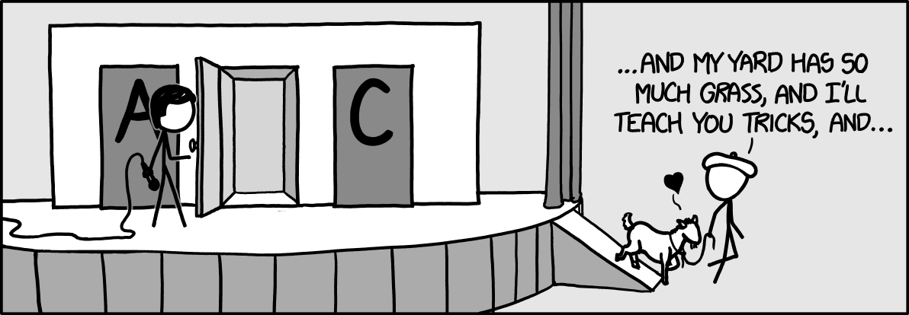

Law of total probability and Bayes’ theorem
Before reading this guide, it is highly recommended that you read Guide: Conditional probability.
| Narration of study guide: |
Introduction
The law of total probability and Bayes’ theorem extend the basic ideas of conditional probability. They provide a way to calculate probabilities when outcomes depend on multiple possible scenarios or when information is incomplete or indirect. These results are widely used across statistics, particularly in problems involving uncertainty, prediction, and statistical inference. This guide introduces both the law of total probability and Bayes’ theorem, explains how they are derived, and shows how to apply them in practical contexts.
Law of total probability
In everyday life, an event can often happen in more ways than one. For example, the chance that a package arrives late might depend on whether it is delivered by courier A or courier B. If each courier is used for a different proportion of deliveries, and each one has a different chance of causing a delay, then the overall chance of delay depends on both which courier is used and how often each one is chosen.
The law of total probability allows you to calculate the total probability of an event by combining its conditional probabilities across several possible scenarios. This approach is especially helpful when outcomes depend on mutually exclusive events (only one possible scenario can occur at a time), each with a known probability.
Suppose an event \(B\) depends on several possible scenarios. These scenarios can be described by events \(A_1,A_2,\ldots, A_n\), that are:
- Mutually exclusive: they cannot occur at the same time, and
- Exhaustive: one of them must always occur.
Then, the law of total probability states that the probability of event \(B\) is:
\[ \mathbb{P}(B) = \sum_{i=1}^{n} \mathbb{P}(A_i) \mathbb{P}(B \mid A_i) \] Each term represents the probability of \(B\) in one particular scenario.
The symbol \(\sum\) is called sigma notation. In this case, it is adding the probabilities for each possible scenario where \(B\) could happen. For more, see Guide: Sigma notation.
To apply the law of total probability:
- Calculate each scenario’s conditional probability, \(\mathbb{P}(B \mid A_i)\).
- Multiply these conditional probabilities by their scenario likelihoods, \(\mathbb{P}(A_i)\).
- Add these results to find the total probability of event \(B\).
This accounts for each possible scenario exactly once.
For more about why the law of total probability is true, please go to Proof: Law of total probability and Bayes’ theorem.
The examples that follow all stick to a certain pattern, which can be summarized as follows:
- Information about probabilities
- Renaming of events and probabilities into mathematical terms
- Application of the formula
This standard pattern is a useful framework for you to produce answers to these questions. It’s important to have clarity in what information you have and what information you are trying to work out.
At a hospital:
- \(70\%\) of patients are treated in the general ward,
- \(30\%\) of patients are treated in the emergency unit,
- The probability a patient in the general ward recovers in \(2\) days is \(0.8\).
- The probability a patient in the emergency unit recovers in \(2\) days is \(0.6\).
What is the probability that a randomly selected patient recovers in 2 days?
Let \(B\) be the event the patient recovers in \(2\) days. Let \(A_G\) be the event they are treated in the general ward, and \(A_E\) in the emergency unit.
You know:
- \(\mathbb{P}(A_G) = 0.7\),
- \(\mathbb{P}(A_E) = 0.3\),
- \(\mathbb{P}(B \mid A_G) = 0.8\),
- \(\mathbb{P}(B \mid A_E) = 0.6\).
You want to find \(\mathbb{P}(B)\). Using the law of total probability:
\[ \begin{aligned} \mathbb{P}(B) &= \mathbb{P}(A_G)\mathbb{P}(B\mid A_G) + \mathbb{P}(A_E)\mathbb{P}(B\mid A_E)\\[0.5em] &= (0.7)(0.8) + (0.3)(0.6)\\[0.5em] &= 0.56 + 0.18 = 0.74 \end{aligned} \]
So the probability that a randomly selected patient recovers in \(2\) days is \(0.74\), or \(74\%\).
You don’t have to write quite so much in your final explanation using the law of total probability; see the next example for more.
A group of students can choose to study in three different locations; a local library, a cafe, or at home. The students were surveyed, and it was found that students work:
- \(50\%\) of the time in the library,
- \(30\%\) of the time in a café,
- \(20\%\) of the time home.
Research has indicated that students concentrate well:
- \(90\%\) of the time in the library,
- \(60\%\) of the time in the café,
- \(40\%\) of the time at home.
What is the probability that a random student concentrates well on any given day?
Let \(B\) be the event the student concentrates well. Let \(A_L\), \(A_C\), and \(A_H\) be the events that the student studies in the library, café, and home, respectively.
You know from above that
- \(\mathbb{P}(A_L) = 0.5\) and \(\mathbb{P}(B \mid A_L) = 0.9\)
- \(\mathbb{P}(A_C) = 0.3\) and \(\mathbb{P}(B \mid A_C) = 0.6\)
- \(\mathbb{P}(A_H) = 0.2\) and \(\mathbb{P}(B \mid A_H) = 0.4\)
You want to find \(\mathbb{P}(B)\). Using the law of total probability:
\[ \mathbb{P}(B) = (0.5)(0.9) + (0.3)(0.6) + (0.2)(0.4) = 0.45 + 0.18 + 0.08 = 0.71 \]
So, the probability that the student concentrates well on any given day is \(0.71\), or \(71\%\).
At Cantor’s Confectionery the customer service team receives emails from three types of senders:
- \(40\%\) of the time from satisfied customers,
- \(35\%\) from important suppliers,
- \(25\%\) from dissatisfied customers (who detest mathematics and statistics).
The chance of an email containing a typo is:
- \(5\%\) for satisfied customer emails,
- \(2\%\) for important supplier emails,
- \(8\%\) for dissatisfied customer emails.
What is the probability that a randomly selected email contains a typo?
Let \(B\) be the event that the email contains a typo. Let \(A_S\), \(A_I\), and \(A_D\) represent the sender: satisfied customer, important supplier, or dissatisfied customer.
You know:
- \(\mathbb{P}(A_S) = 0.4\) and \(\mathbb{P}(B \mid A_S) = 0.05\)
- \(\mathbb{P}(A_I) = 0.35\) and \(\mathbb{P}(B \mid A_I) = 0.02\)
- \(\mathbb{P}(A_D) = 0.25\) and \(\mathbb{P}(B \mid A_D) = 0.08\)
You want to find \(\mathbb{P}(B)\). Using the law of total probability:
\[ \mathbb{P}(B) = (0.4)(0.05) + (0.35)(0.02) + (0.25)(0.08) = 0.02 + 0.007 + 0.02 = 0.047 \]
So, the probability that an incoming email contains a typo is \(0.047\), or \(4.7\%\).
Bayes’ theorem
Often, the probability of one event given another is known, but the reverse is needed.
For instance, suppose that Cantor’s Confectionery has three candy machines \(A,B,C\), and that you know the probability of a bad-tasting candy being made given you know which machine made it. Suppose you wanted to know there reverse conditional probability; given that you have a bad tasting candy, what is the probability that machine \(C\) is responsible? (See Example 6 below.)
Bayes’ theorem lets you reverse conditional probabilities, calculating the probability of event \(A\) given event \(B\), based on the probability of \(B\) given \(A\).
Bayes’ Theorem is especially useful for updating predictions as new information becomes available and when it is difficult to calculate probabilities directly. It is used in such diverse areas as medicine, manufacturing, and even game shows (see Example 7).
If \(A\) and \(B\) are events with \(\mathbb{P}(B) > 0\), then Bayes’ theorem states:
\[ \mathbb{P}(A \mid B) = \dfrac{\mathbb{P}(B \mid A) \mathbb{P}(A)}{\mathbb{P}(B)}. \]
where:
- \(\mathbb{P}(A \mid B)\) is the probability of \(A\) given \(B\),
- \(\mathbb{P}(B \mid A)\) is the probability of \(B\) given \(A\),
- \(\mathbb{P}(A)\) and \(\mathbb{P}(B)\) are the individual probabilities of \(A\) and \(B\), respectively.
For more about why the Bayes’ theorem is true, please go to Proof: Law of total probability and Bayes’ theorem.
Here are some examples about how to use Bayes’ theorem, including one which could win you a car! (Important notice: STARMAST will not give you a car.)
A library survey found:
- \(15\%\) of people regularly borrow mystery books.
- Of people who regularly borrow mystery books, \(80\%\) also borrow science fiction books.
- In general, \(40\%\) of people regularly borrow science fiction books.
A person is randomly selected and found to regularly borrow science fiction books. What is the probability they also regularly borrow mystery books?
To answer this question, you could use Bayes’ theorem. First of all, define the events using mathematical notations:
- \(M\): A student regularly borrows mystery books.
- \(S\): A student regularly borrows science fiction books.
You know from the given information above that
- \(\mathbb{P}(M) = 0.15\),
- \(\mathbb{P}(S) = 0.40\),
- \(\mathbb{P}(S \mid M) = 0.80\).
You want to work out \(\mathbb{P}(M\mid S)\), which is the probability they they regularly borrow science fiction given that they regularly borrow mystery books. So applying Bayes’ theorem gives:
\[ \begin{aligned} \mathbb{P}(M \mid S) &= \dfrac{\mathbb{P}(S \mid M)\mathbb{P}(M)}{\mathbb{P}(S)}\\[0.5em] &= \dfrac{(0.80)(0.15)}{0.40} = 0.30 \end{aligned} \]
So, given the person borrows science fiction books regularly, there is a \(30\%\) chance they also regularly borrow mystery books.
Here’s an example that combines both Bayes’ theorem and the law of total probability.
Commuters to work at Cantor’s Confectionery choose transport as follows:
- \(60\%\) travel by bus
- \(40\%\) travel by car.
But there are some problems:
- Bus commuters are late \(25\%\) of the time.
- Car commuters are late \(10\%\) of the time.
As a high-ranking manager in Cantor’s confectionery, you are a little annoyed at the constant lateness and want to do some research. You randomly select a commuter who arrived late today, and want to find out the probability that they commuted by bus.
First, you could define the events as follows
- \(B\): Commuter travels by bus.
- \(C\): Commuter travels by car.
- \(L\): Commuter arrives late.
You know \(\mathbb{P}(B) = 0.6\), and \(\mathbb{P}(C) = 0.4\); you also know that \(\mathbb{P}(L\mid B) = 0.2\) and \(\mathbb{P}(L\mid C) = 0.1\). You want to work out \(\mathbb{P}(B\mid L)\) using Bayes’ theorem. In order to use Bayes’ theorem, you will need to know \(\mathbb{P}(L)\), which you don’t know.
Thankfully, this can be worked out using the law of total probability. Doing this gives
\[ \begin{aligned} \mathbb{P}(L) &= \mathbb{P}(L \mid B)\mathbb{P}(B) + \mathbb{P}(L \mid C)\mathbb{P}(C)\\[0.5em] &= (0.25)(0.60) + (0.10)(0.40) = 0.15 + 0.04 = 0.19 \end{aligned} \]
Now you can use Bayes’ theorem to get
\[ \mathbb{P}(B \mid L) = \dfrac{\mathbb{P}(L \mid B)\mathbb{P}(B)}{\mathbb{P}(L)} = \dfrac{(0.25)(0.60)}{0.19} \approx 0.7895 \] So given the commuter arrived late, there’s about a \(79\%\) chance they commute by bus. Time to suggest earlier buses!
Cantor’s Confectionery uses three machines to make some of its delicious sweets. There are creatively named Machines A, B, C. Here are their vital statistics.
- Machine A produces \(50\%\) of the items and has a \(2\%\) defect rate,
- Machine B produces \(30\%\) of the items and has a \(5\%\) defect rate,
- Machine C produces \(20\%\) of the items and has a \(10\%\) defect rate.
You select an item at random and find that it is defective. What is the probability that it was made by Machine C?
Once again, the first thing to do is to give the events names. Let:
- \(A\), \(B\), and \(C\) be the events that the item came from Machine A, B, or C,
- \(D\) be the event that the item is defective.
You know from above that
- \(\mathbb{P}(A) = 0.5\), \(\mathbb{P}(B) = 0.3\), \(\mathbb{P}(C) = 0.2\),
- \(\mathbb{P}(D \mid A) = 0.02\), \(\mathbb{P}(D \mid B) = 0.05\), \(\mathbb{P}(D \mid C) = 0.10\).
You want to find \(\mathbb{P}(C\mid D)\). To do this, you need \(\mathbb{P}(D)\) which you don’t know, but you can work out using the law of total probability. Doing this gives
\[ \mathbb{P}(D) = (0.02)(0.5) + (0.05)(0.3) + (0.10)(0.2) = 0.01 + 0.015 + 0.02 = 0.045 \]
Now you can apply Bayes’ theorem to get:
\[ \mathbb{P}(C \mid D) = \dfrac{\mathbb{P}(D \mid C)\mathbb{P}(C)}{\mathbb{P}(D)} = \dfrac{(0.10)(0.20)}{0.045} \approx 0.444 \]
So, given that the item is defective, there is about a 44% chance it came from Machine C. Time to get some maintenance!
Finally, here’s an example of how to use Bayes’ theorem to solve a very famous real life problem from a very real TV game show.
Here’s the situation:
- In the climax of a game show, there are three doors \(A,B,C\).
- Behind one of the doors is a fantastic new car; behind the other two are goats. The host knows what lies behind each door.
- You are encouraged to select a door to try and win the car, and you make an initial choice of door.
- Before your chosen door is opened, the host then opens another door, revealing a goat.
- The host then asks you if you want to switch your door.
- The question is: should you switch your door?
Once again, this is an application of Bayes’ theorem, even if it doesn’t look like it to begin with.
To begin with, write \(\textsf{Car}_A, \textsf{Car}_B, \textsf{Car}_C\) for the events that the car is behind doors \(A,B,C\) respectively. At the start, \[\mathbb{P}(\textsf{Car}_A) = \mathbb{P}(\textsf{Car}_B) = \mathbb{P}(\textsf{Car}_C) = \dfrac{1}{3}.\]
For the maths involved in what follows, your initial choice of door is not important; the maths will be the same if you relabelled all doors. (This is known as without loss of generality.) So assume you pick door \(A\).
This means that the host has a choice of two doors to open; either \(B\) or \(C\). There will be a goat behind whichever door they pick. The events of the host opening door \(B\) and \(C\) can be written as \(\textsf{O}_B, \textsf{O}_C\). You can now work out some conditional probabilities.
If the car is behind door \(A\), then the host has an equal chance to pick either door \(B\) or door \(C\). Therefore \[\mathbb{P}(\textsf{O}_B\mid \textsf{Car}_A) = \mathbb{P}(\textsf{O}_C\mid \textsf{Car}_A) = \frac{1}{2}.\]
If the car is behind door \(B\), then the host cannot pick door \(B\) to open as that would reveal the car; they cannot pick door \(A\) as you chose it. So they must pick door \(C\) to open, which means that \[\mathbb{P}(\textsf{O}_B\mid \textsf{Car}_B) = 0 \quad\textsf{ and }\quad \mathbb{P}(\textsf{O}_C\mid \textsf{Car}_B) = 1.\]
Similarly, if the car is behind door \(C\), then the host cannot pick door \(C\) to open as that would reveal the car; they cannot pick door \(A\) as you chose it. So they must pick door \(B\) to open, which means that \[\mathbb{P}(\textsf{O}_B\mid \textsf{Car}_B) = 1 \quad\textsf{ and }\quad \mathbb{P}(\textsf{O}_C\mid \textsf{Car}_B) = 0.\]
So, the question is should you switch to the new door or should you stick with the original choice? This means working out the probability of where the car is given that you know which door the host opens, which is a perfect use of Bayes’ theorem.
As your original choice of door didn’t matter for the maths, the choice of which door to open by the host doesn’t matter either; let’s say that the host opens door \(B\). However, you don’t yet know \(\mathbb{P}(\textsf{O}_B)\), which is needed for Bayes’ theorem. Using the law of total probability, you can write that
\[ \begin{aligned} \mathbb{P}(\textsf{O}_B) &= \mathbb{P}(\textsf{O}_B\mid \textsf{Car}_A)\mathbb{P}(\textsf{Car}_A) + \mathbb{P}(\textsf{O}_B\mid \textsf{Car}_B)\mathbb{P}(\textsf{Car}_B) + \mathbb{P}(\textsf{O}_B\mid \textsf{Car}_C)\mathbb{P}(\textsf{Car}_C)\\[0.5em] &= \left(\frac{1}{2}\right)\left(\frac{1}{3}\right) + \left(0\right)\left(\frac{1}{3}\right) + \left(1\right)\left(\frac{1}{3}\right)\\[0.5em] &= \frac{1}{6} + \frac{1}{3} = \frac{1}{2} \end{aligned} \]
You can now work out the conditional probabilities of the car being behind doors \(A,C\) given that the host opens door \(B\):
Here, you are working out \(\mathbb{P}(\textsf{Car}_A\mid \textsf{O}_B)\), which by Bayes’ theorem is \[\begin{aligned}\mathbb{P}(\textsf{Car}_A\mid \textsf{O}_B) &= \frac{\mathbb{P}(\textsf{O}_B\mid \textsf{Car}_A)\mathbb{P}(\textsf{O}_B)}{\mathbb{P}(\textsf{Car}_A)}\\[0.5em] &= \frac{(1/2)(1/3)}{(1/2)} = \frac{1}{3}\end{aligned}\]
Finally, you are working out \(\mathbb{P}(\textsf{Car}_C\mid \textsf{O}_B)\), which by Bayes’ theorem is \[\begin{aligned}\mathbb{P}(\textsf{Car}_C\mid \textsf{O}_B) &= \frac{\mathbb{P}(\textsf{O}_B\mid \textsf{Car}_C)\mathbb{P}(\textsf{O}_B)}{\mathbb{P}(\textsf{Car}_C)}\\[0.5em] &= \frac{(1)(1/3)}{(1/2)} = \frac{2}{3}\end{aligned}\]
So, the probability of winning if you stick with door \(A\) is \(1/3\), but the probability of winning if you switch to door \(C\) is \(2/3\)! You are twice as likely to win the car if you switch doors.
Of course (with credit to xkcd), the real prize might not be the car…

Quick check problems
In the following questions, enter your answers as decimal numbers rounded to 2 decimal places.
- A hospital treats patients in two wards:
- 80% in the general ward, 20% in emergency
- Recovery rates within 2 days are 70% (general) and 50% (emergency)
What is the probability a randomly selected patient recovers in 2 days?
- A student studies:
- 60% in the library, 30% in a café, 10% at home
- Concentration rates are 90%, 60%, and 40%, respectively
What is the probability that the student concentrates well on a given day?
- After your investigation into commuters to Cantor’s Confectionery, you receive a new set of statistics:
- 40% commute by bus, 60% by car
- Bus lateness: 10%, Car lateness: 20%
A commuter is late. What is the probability they took the bus?
- As discussed above above, Cantor’s Confectionery has 3 machines with the following statistics:
- A: 50% of production, 2% defect rate
- B: 30%, 5% defect
- C: 20%, 10% defect
If an item is defective, what is the probability it came from Machine A?
- True or false:
The law of total probability can only be used when events are mutually exclusive and exhaustive.
Bayes’ Theorem allows reversing conditional probabilities.
The law of total probability requires \(\mathbb{P}(B \mid A_i)\) for every outcome.
Further reading
Version history and licensing
v1.0: initial version created 05/25 by Sophie Chowgule as part of a University of St Andrews VIP project.